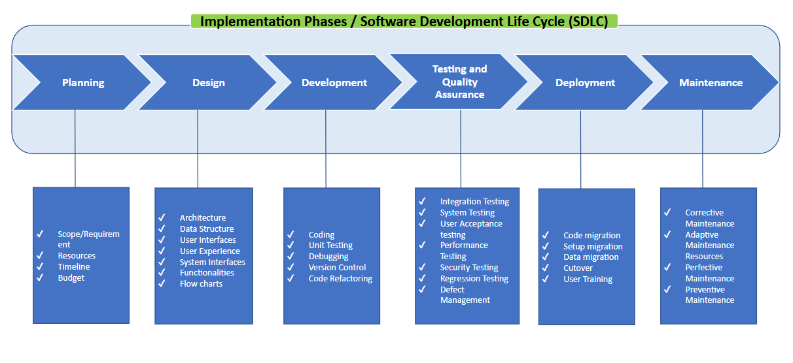

Introduction to Application Engineering! What is it? How is it different from software? What are the implementation phases?
Concepts:
- What is Application Engineering?
- Application Engineering refers to the process of designing, developing, and implementing software applications to meet specific business needs or solve specific problems.
- It involves applying engineering principles, methodologies, and practices to create robust, scalable, and efficient software solutions.
- How is Application Engineering different from software?
- Software refers to a collection of computer programs, data, and instructions that enable a computer system to perform specific tasks or functions.
- An application is a specific type of software that is designed to perform a particular task or set of tasks for end-users. It is a program or software system that serves a specific purpose.
Application:
This is the Software Development Life Cycle (SDLC), otherwise known as the implementation phases.
Quiz:
Question 1: What does application engineering refer to?
Application Engineering Refers to the process of designing, developing, and implementing software applications to meet specific business needs or solve specific problems.
Question 2: What is the main focus of application engineering in application implementation?
The main focus of Application Engineering in application implementation is the Engineering aspect.
Question 3: Can you name two stages of the SDLC process?
Planning/Design/Development/Testing & Quality Assurance/Deployment/Maintenance
Question 4: What is the difference between software and application?
Software is a broader term that encompasses all types of computer programs, including applications. Applications, on the other hand, refer to software programs designed for specific purposes or tasks that are meant to be used by end-users.
Question 5: What goes on in the development process?
Coding, Unit Testing, Debugging, Version Control, Code Refactoring
Question 6: What happens in the maintenance phase?
In this stage, the software is maintained and updated to fix defects and add new features. This includes performing bug fixes, updating documentation, and providing support to end-users.